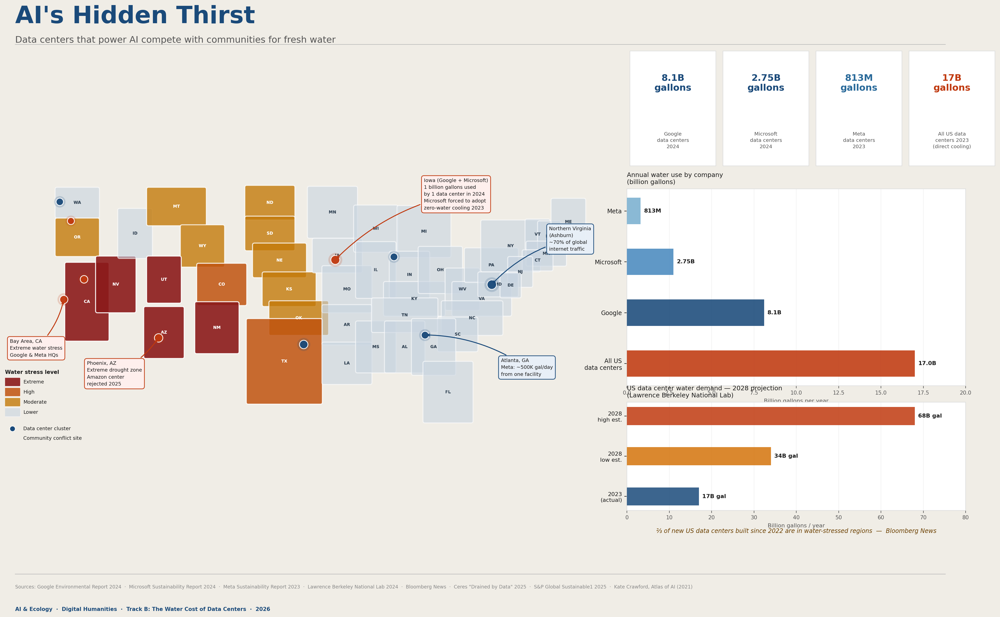

Make 11 · Week 12 · Infographic / Research
AI's Hidden Thirst: Water and the Cloud
Tools: Canva, ChatGPT · Week 12

Environmental visualizations
For this project I created a full-color infographic map visualizing the water cost of AI data centers across the United States. The infographic has four parts working together: a schematic US map with every state shaded by water stress level (extreme, high, moderate, or lower); blue and red dots marking major data center clusters and active community conflict sites; a horizontal bar chart comparing annual water use by Google, Microsoft, Meta, and all US data centers combined; and a 2028 projection chart showing how demand is expected to grow. The map makes the abstract concrete by placing the data geographically. You can see, on the same image, which states face extreme water stress and exactly where the largest data center clusters sit on top of them. The Iowa callout makes the scale visceral: one Google data center in Council Bluffs used 1 billion gallons of water in 2024 — enough to supply all of Iowa's residential water for five days. The bar chart shows that Google alone used 8.1 billion gallons in 2024, while all US data centers combined used 17 billion gallons just for direct cooling. The projection bars show that figure could double or quadruple by 2028. The single most striking fact is printed across the bottom of the infographic: two thirds of new data centers built since 2022 are located in water-stressed regions
Research Documentation
My research focused on water consumption by AI data centers - who uses it, how much, and which communities bear the cost. I worked from three tiers of sources: primary corporate sustainability reports, government and academic research, and investigative journalism. For corporate data I used Google's 2024 Environmental Report, Microsoft's 2024 Sustainability Report, and Meta's 2023 Sustainability Report. These gave me the headline numbers: 8.1 billion gallons for Google, 2.75 billion for Microsoft, and 813 million for Meta. For broader industry figures and projections I used the Lawrence Berkeley National Laboratory's 2024 Report on U.S. Data Center Energy Use, which provided both the 17 billion gallon baseline and the 2028 doubling and quadrupling scenarios. For the Iowa conflict story I used reporting from Axios Des Moines and Iowa Public Radio. For theoretical framing I drew on Kate Crawford's Atlas of AI, which argues that AI is fundamentally an extractive industry whose costs fall on ecosystems and marginalized communities while benefits concentrate elsewhere.
The hardest data to find was consistent per-query water use. The numbers vary by a factor of more than 100 depending on what is counted. OpenAI's official figure is 0.32 milliliters per query, which covers only direct on-site cooling. Researchers at UC Riverside, in a 2023 paper titled "Making AI Less Thirsty," estimated 10 to 50 milliliters per query once the water required to generate the electricity powering the servers is included. That gap is not a research error — it reflects genuine disagreement about scope, and real variation based on which data center handles a request and how it is cooled. Users have no visibility into either.
The main uncertainties are: the wide per-query range; the fact that 2028 projections assume current growth trajectories continue; and the gap in corporate disclosure, since most companies publish global totals rather than facility-level data, making it impossible to know which specific sites draw from water-stressed regions.
Artist Statement
The environmental cost that concerns me most from this research is water — not carbon — because water is local in a way that carbon is not. A ton of CO₂ dissolves into a shared global atmosphere, diffusing the harm across the planet. A billion gallons of water is drawn from one specific place: one aquifer, one river, one municipal supply, in competition with one community's farmers and one city's residents. That specificity is what makes the Iowa story matter. The water evaporated by a data center cooling tower is the same water a family down the road drinks. The harm has an address.
What concerns me nearly as much is the invisibility. The word "cloud" is doing enormous work in this situation. It suggests something weightless, clean, and everywhere at once — the opposite of the physical reality, which is millions of gallons of fresh water pumped through server halls in buildings that sit on specific land in specific drought-prone states. That metaphor is not innocent. It makes it harder for communities to ask the right questions before a data center is approved, and harder for the public to hold companies accountable after.
Can AI be sustainable? Possibly, but not without deliberate structural change. The technology for zero-water cooling already exists — Microsoft adopted it in Iowa the moment expansion was made conditional on doing so. The barrier is not engineering. It is incentive. As long as water is cheap and largely invisible in corporate accounting, efficiency will remain optional.
My responsibility, as I understand it, is not primarily to use less AI. The numbers do not support individual reduction as the main lever. My responsibility is to understand what the cloud actually costs, to talk about it, and to support the kind of transparency that lets communities make informed decisions about what gets built in their watershed.
Personal Reflection
Before this project, I thought of AI tools as essentially weightless: software running on distant servers, invisible and free of physical resources. This project revealed that framing as a kind of designed ignorance. The "cloud" is not weightless. It is a network of physical machines in physical buildings drawing from physical water supplies in specific places, affecting specific communities.
Using the UC Riverside research range of 10-50 ml per prompt as a guide, on a typical day I might send 15-30 prompts across various AI tools. That is 150 ml to 1.5 liters of water per day. Over a year, that is 55 to 540 liters from my use alone.
Kate Crawford's Atlas of AI argues that AI's environmental costs are not accidents - they are structural outcomes of an industry that externalizes its resource costs onto ecosystems and marginalized communities while concentrating profits in wealthy regions. The Iowa case is instructive: Microsoft adopted zero-water cooling only when expansion was made conditional on it. The change required informed local officials, a formal agreement, and community awareness. The honest answer to "who is responsible?" is: companies first, regulators second, and informed citizens as the mechanism of pressure on both.
Attribution & AI Use Log
- Tools Used
- Canva (infographic design), ChatGPT
- Sources
- Google Environmental Report 2024; Microsoft Sustainability Report 2024; Li et al. (2023) "Making AI Less Thirsty" (UC Riverside); Lawrence Berkeley National Laboratory 2024 report; Crawford, Atlas of AI (2021)
- AI Contributions
- Helped plan research approach, find and verify data, draft written sections, and build visualizations.
- Human Contributions
- Chose water as the focus; identified the key insight that every query (not just training) consumes water; chose to frame personal responsibility as civic action rather than individual reduction; all final design and editorial decisions.